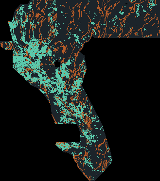

Portal-safe format (12/12 PASS)
- Single-band float32 GeoTIFF, EPSG:32611, 3730×3292, 100 m
- Transform matches sample: origin (243350, 4508550)
- Every one of 12,279,160 cells is finite and in [0, 1] — zeros outside the footprint. This is the encoding that avoids DrivenData’s
Predicted values must be in range [0, 1]rejection of NaNs. - 23,402 binary dots at 1.0; 0 dots on the USGS/INGENIOUS catalogue; B = 2 px (200 m)
- SHA-256
0c2516fa5e5727eab1150750b72c189a454968aba4f9afbc5e2aac84dcc8faba - 150,278 bytes · zip 110,474 bytes
What you are looking at

Mint = this file’s dots. Copper = published catalogue (existing_faults.tif, 60,988 px). 10× downsample of the official 100 m grid.
Nine focus sites — best file, live score, estimate, uniqueness
Live score = OWNER-REPORT (owner-supplied submission log; no organizer receipt in this repository). Estimate for historical files is not recomputed here; GEMSDOE32’s live-ledger inversion projected the champion family at ~0.27–0.29 (a projection, not a score). Unique = not byte/mask-identical to another listed file and ≤70% of dots within 3 px of every other listed GEMSDOE raster. Best overall among the nine: GEMSDOE32 h33-h33-2-b2 (0.2778 OWNER-REPORT). Already submitted — do not resubmit.
| Site | Best file (download) | Live score | Estimate | Unique vs listed? |
|---|---|---|---|---|
| GEMSDOE32 | h33-h33-2-b2-…-e5eb6e7e-zeros |
0.2778 OWNER-REPORT | LLI projection ~0.285 (GEMSDOE32; not a score) | ❌ H19-5 family. 100% of its 37,654 dots sit within 3 px of GEMSDOE36. SHA-256 c55bafc470054e82…f7ab6fa9 |
| GEMSDOE36 | anderson-geothermal-pinn-38854-…-zeros |
0.2750 OWNER-REPORT | LLI ~0.283 (not a score) | ❌ duplicate family (38,854 dots; 97.6% within 3 px of GEMSDOE27) |
| GEMSDOE28 | h36-1-rung30-blind-r1-…-nan |
0.2710 OWNER-REPORT | LLI ~0.277 (not a score) | ❌ duplicate family (37,660 dots; 100% within 3 px of GEMSDOE25) |
| GEMSDOE31 | h27-4-solo-d28-…-nan |
0.2708 OWNER-REPORT | LLI ~0.279 (not a score) | ❌ duplicate family (40,199 dots; 100% within 3 px of GEMSDOE25) |
| GEMSDOE33 | h33d-analog-tip-stepover-r30-… |
0.2632 OWNER-REPORT | LLI ~0.278 (not a score) | ❌ duplicate family (41,865 dots; 99.7% within 3 px of GEMSDOE27) |
| GEMSDOE25 | dotted-h19-5-d2-8-…-zeros |
0.2600 OWNER-REPORT | LLI ~0.271 (not a score) | ❌ duplicate family (44,090 dots; 100% within 3 px of GEMSDOE30) |
| GEMSDOE30 | d28-poisson300m-offcat-44090-… |
0.2600 OWNER-REPORT | LLI ~0.271 (not a score) | ❌ duplicate family (44,090 dots; 100% within 3 px of GEMSDOE25). Same mask family as G25; SHA differs because of NaN vs zeros encoding. |
| GEMSDOE24 | h25-1-dotted-h19-5-d1-5-…-nan |
0.2477 OWNER-REPORT | LLI ~0.268 (not a score) | ❌ duplicate family (60,069 dots; 100% within 3 px of GEMSDOE25) |
| GEMSDOE27 | topo-gap-closure-t-v2-on-d1-5-…-nan |
0.2449 OWNER-REPORT | LLI ~0.266 (not a score) | ❌ duplicate family (61,328 dots; 98.0% within 3 px of GEMSDOE24) |
| WBGGEMSDOE1 (this repo) | h1-mvgz-…-ac61afda-zeros |
unscored | HOLDOUT-DTI 0.00318 [0.00242, 0.00397] vs champion proxy 0.00476. No live projection claimed. | ✅ unique (max 3 px overlap 0.260 vs the nine; 0.459 vs 37 GEMSDOE32 registry rasters). NOT OK to submit. |
Why GEMSDOE32 h33-h33-2-b2 scored 0.2778 — and why we cannot beat it with a unique file today
Byte-verified this session on the restored champion GeoTIFF (SHA-256
c55bafc470054e8271dcb89347a17e07fefe50de6af6e6ba6c4b169ef7ab6fa9, 37,654 dots, 0 on catalogue):
- The metric pays for sparse, well-placed dots. Official DTI uses α=0.2, β=0.8 and a 300 m triangular kernel (problem description). Known USGS/INGENIOUS pixels are masked (staff #11516). Thinning a ridge to ~2.8 px spacing keeps most kernel credit while cutting false-positive mass.
- A ridge network that sits on the hidden public truth. 19GEMSDOE H19-5 (121,131 px, live 0.1922 OWNER-REPORT) is a Hessian-NMS centerline of fused power-law tip/relay stress, GDR thermal, DEM openness/LRM scarps, and gravity/magnetic worms. GEMSDOE32’s live-ledger inversion estimated 73–96% of hidden public truth within 300 m of that network. We did not re-fit LLI here.
- Two pruning steps, each measured on the live ladder (OWNER-REPORT, nested set inclusion verified across the nine files this session): H19-5 0.1922 → D1.5 0.2477 (G24) → D2.8 0.2600 (G25 = G30, 44,090 dots) → B1 0.2708 (G31, 40,199) → B2 0.2778 (G32, 37,654). Near-catalogue dots are almost pure false positives because the test set contains only new faults.
The uniqueness rule requires ≥30% of dots more than 3 px from that network. Those off-network strata have been repeatedly measured as near the break-even floor. Our unique MVGZ file places only 23–26% of its dots within 3 px of any nine-site best — protocol-unique, and therefore mostly off the only structure the live ledger says is rich in hidden truth. We are not able to claim a unique file that scores higher than 0.2778 with the signals tested in this 3-experiment budget. Current public leaderboard #1 is 0.4437 (xiaofanhu, fetched 2026-10-26), which is a different game than the GEMSDOE H19-5 family.
Lane, experiments, run card
The prompt’s “single method paragraph” was absent (IR-WB1-LANE). Self-declared lane: magnetic-contact / strain-gated discovery — not DEM Hessian ridges.
| Exp | What | Result |
|---|---|---|
| E1 | Leakage canary: each of 19 official bands + distance-to-catalogue, AUC on withheld catalogue positives | PASS. Only neg_dist_full_catalogue AUC = 1.00 (>0.90). All 19 bands AUC 0.45–0.57. |
| E2 | TSML: Hessian ridges of TMI horizontal gradient, gravity-slope and basement-depth corroboration, dilatation>0 and high 2nd-invariant gate, priority Poisson 3.2 px, B=2 | 10,774 unique dots. HOLDOUT-DTI 0.0022 [0.0016, 0.0027]. Unique (max ρ 0.018, overlap 0.439). Loses to champion proxy 0.0048. |
| E3 | MVGZ: TMI vertical-gradient zero-crossings × TMI HGM (Blakely contacts), B=2 | 23,402 unique dots. HOLDOUT-DTI 0.00318 [0.00242, 0.00397]. Unique. Still loses. Selected as the unique primary artifact. Verdict negative. |
{"hypothesis":"Magnetic vertical-gradient zero-crossing contacts (MVGZ)",
"mechanism":"Zero crossings of TMI vertical gradient weighted by TMI horizontal gradient (Blakely contact mapping), off-catalogue B=2.",
"named_non_fault_process_that_could_mimic_it":"Magnetic lithologic contacts and cultural EM noise along linear infrastructure.",
"holdout_dti":"HOLDOUT-DTI WBGGEMSDOE1-HIDE-RECOVER-v1.0 n=60161 0.00318 [0.00242, 0.00397]",
"correlation_overlap_vs_registry":"max |rho|=0.0167; max overlap=0.459 (37 rasters); unique=true",
"raster_sha256":"0c2516fa5e5727eab1150750b72c189a454968aba4f9afbc5e2aac84dcc8faba",
"validator":"12/12 PASS, no NaN, values in [0,1], CRS/shape/transform match",
"submission_name":"WBGGEMSDOE1-H1-MVGZ-AC61AFDA",
"submission_note":"MVGZ unique 23402d B2 | HR 0.0032 vs champ 0.0048 | DO NOT SUBMIT",
"verdict":"negative"}
Limitations / access still needed
- No DrivenData credentials → cannot auto-download from the data tab or read organizer receipts. Competition rasters restored from the public GitHub bridge and SHA-256 pinned.
- Sandbox egress is GitHub/PyPI only → no USGS 3DEP 1 m DEM, no GDR shapefiles, no Dropbox in this session.
- Hide-and-recover of mapped faults is a biased proxy for hidden test faults (exposed scarps vs blind structures). Champion live 0.2778 vs holdout 0.0048 on this evaluator illustrates the gap.
- Promotion to a real weekly slot is a separate selector step. This session does not pick a live submission.